Evenly spaced colours for discrete data
This is the default colour scale for categorical variables. It maps each level to an evenly spaced hue on the colour wheel. It does not generate colour-blind safe palettes.
scale_colour_hue(..., h = c(0, 360) + 15, c = 100, l = 65, h.start = 0, direction = 1, na.value = "grey50") scale_fill_hue(..., h = c(0, 360) + 15, c = 100, l = 65, h.start = 0, direction = 1, na.value = "grey50")
Arguments
| ... | Other arguments passed on to |
|---|---|
| h | range of hues to use, in [0, 360] |
| c | chroma (intensity of colour), maximum value varies depending on combination of hue and luminance. |
| l | luminance (lightness), in [0, 100] |
| h.start | hue to start at |
| direction | direction to travel around the colour wheel, 1 = clockwise, -1 = counter-clockwise |
| na.value | Colour to use for missing values |
See also
Other colour scales: scale_alpha,
scale_colour_brewer,
scale_colour_gradient,
scale_colour_grey
Examples
dsamp <- diamonds[sample(nrow(diamonds), 1000), ] (d <- ggplot(dsamp, aes(carat, price)) + geom_point(aes(colour = clarity)))# Change scale label d + scale_colour_hue()d + scale_colour_hue("clarity")d + scale_colour_hue(expression(clarity[beta]))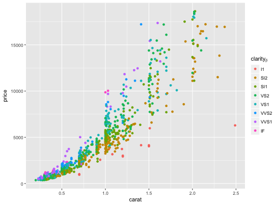# Adjust luminosity and chroma d + scale_colour_hue(l = 40, c = 30)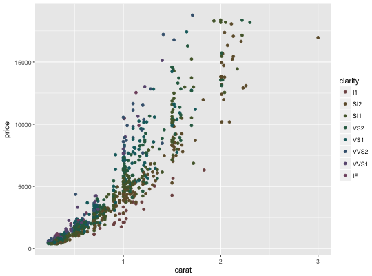d + scale_colour_hue(l = 70, c = 30)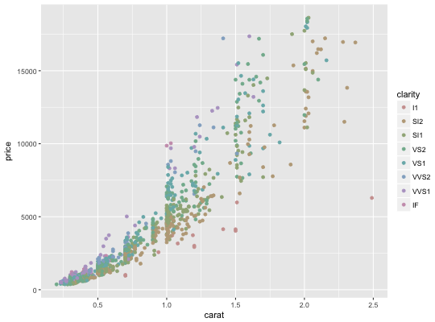d + scale_colour_hue(l = 70, c = 150)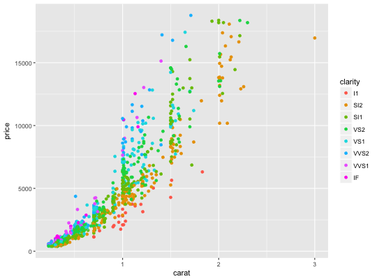d + scale_colour_hue(l = 80, c = 150)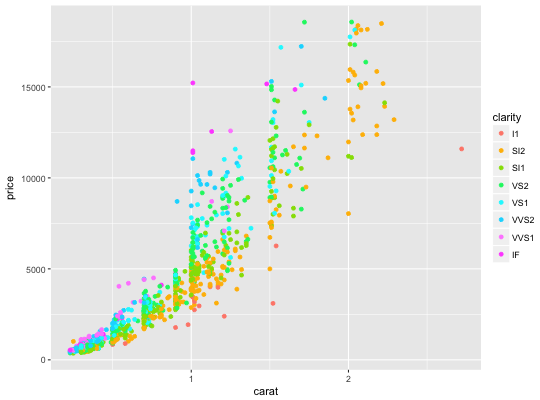# Change range of hues used d + scale_colour_hue(h = c(0, 90))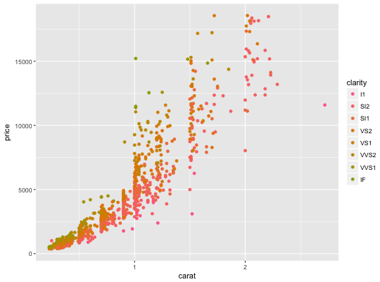d + scale_colour_hue(h = c(90, 180))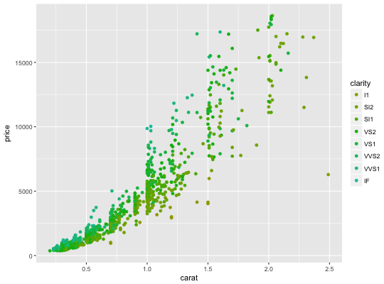d + scale_colour_hue(h = c(180, 270))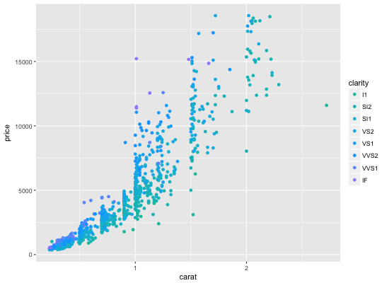d + scale_colour_hue(h = c(270, 360))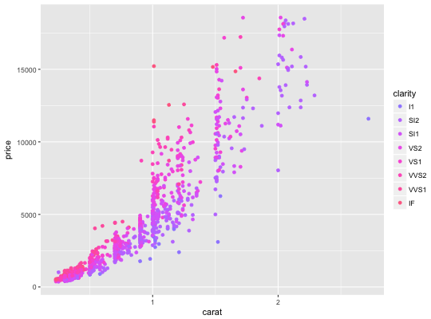# Vary opacity # (only works with pdf, quartz and cairo devices) d <- ggplot(dsamp, aes(carat, price, colour = clarity)) d + geom_point(alpha = 0.9)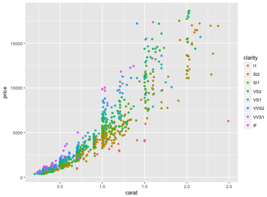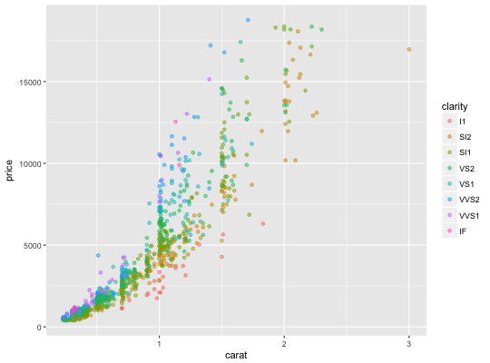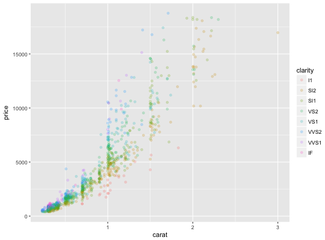# Colour of missing values is controlled with na.value: miss <- factor(sample(c(NA, 1:5), nrow(mtcars), replace = TRUE)) ggplot(mtcars, aes(mpg, wt)) + geom_point(aes(colour = miss))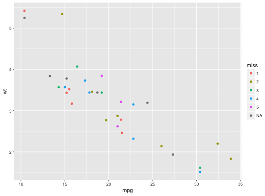ggplot(mtcars, aes(mpg, wt)) + geom_point(aes(colour = miss)) + scale_colour_hue(na.value = "black")